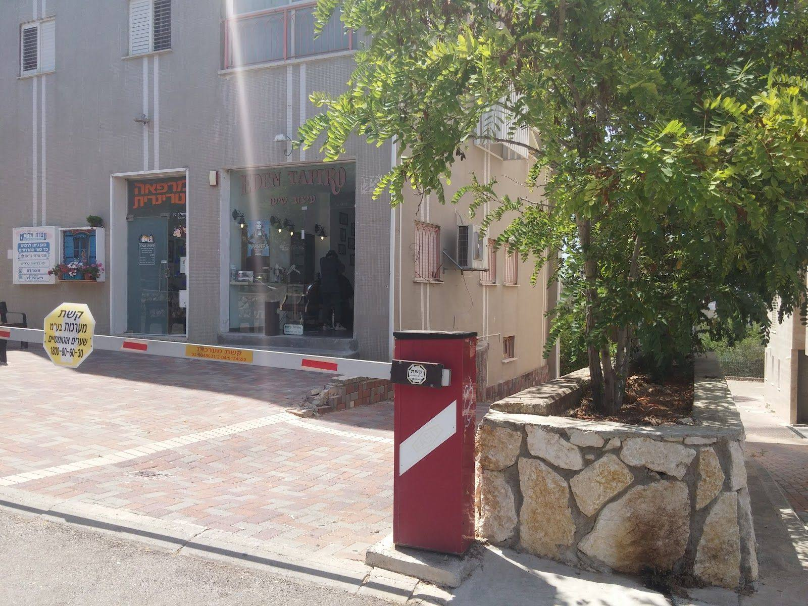
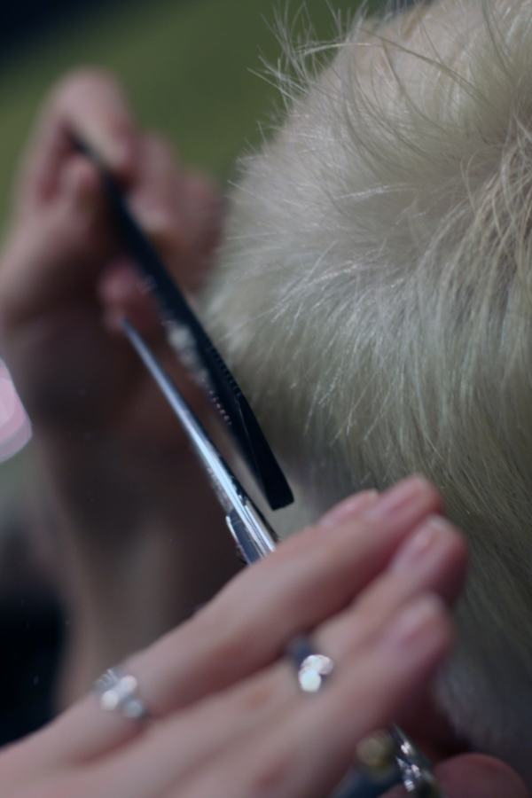

תספורתThe cut
מספריים ומסרק, קווצה אחרי קווצה.Scissors and comb, one section at a time.
קונספט לדוגמה שנבנה עבור עדן טפירו EDEN TAPIRO עיצוב שיער · זה אינו האתר הרשמי של העסקA sample concept built for Eden Tapiro Hair Design · This is not the business’s official website

עיצוב שיער במאפו 13, חיפה. תספורת, חפיפה ופן ותסרוקות.Hair design on 13 Mapu Street, Haifa. Cuts, wash and blow-dry, and styling.
שלושה חוטים שנקלעים לצמה אחת.Three strands, woven into one braid.
מספריים ומסרק, קווצה אחרי קווצה.Scissors and comb, one section at a time.
חפיפה, מברשת עגולה ופן.A wash, a round brush and a blow-dry.
תסרוקת לאירוע, גם לבנות.Styling for an event, for girls too.
החזית אמיתית, ושאר התמונות להמחשה.The shopfront is real; the other pictures are illustrative.

בגוגל, מ-54 ביקורותon Google, from 54 reviews
ספרית מעולה, מעניינת ומקצועית. יודעת לקרוא ולהבין ראשים ולספר בהתאם.
An excellent, interesting and professional hairdresser. She knows how to read and understand heads, and cuts accordingly.
לא יוצאים עם סתם תספורת- השירות והתוצאה חוויה של ממש. האנרגיות, הידיים, החיוך וההקשבה נותנת תחושה שהראש והשער שלנו בידיים טובות.
You don’t leave with just a haircut: the service and the result are a real experience. The energy, the hands, the smile and the listening give a feeling that our head and hair are in good hands.
בחיים לא סיפרו אותי ככ מהר וככ מדויק מחמיא ויפה!!! כולל חפיפה ופן ! ממליצה בחום ואין ספק שאחזור…
I’ve never had a haircut so quick, so precise, so flattering and beautiful! Including a wash and blow-dry! Warmly recommended, and no doubt I’ll be back…
שירות ויחס מדהים ! והמקצועיות? אין דברים כאלה !
Amazing service and attitude! And the professionalism? Unbelievable!
שירות ותספורת באיכות הכי גבוהה שיש
Service and a haircut of the highest quality there is.
גומייה אחת על כל חוט, וההודעה מוכנה.One hair tie on each strand, and the message is ready.
בשביל מיWho for
מה עושיםWhat
מתיWhen
אל: עדן טפירו · 052-641-3565To: Eden Tapiro · 052-641-3565
שליחה לעדן בוואטסאפSend to Eden on WhatsAppחלון הראווה עם האותיות הוורודות, ליד העץ.The shop window with the pink letters, next to the tree.
חפשו את השלטLook for the sign
שעותHours
ביקורות בגוגל, ממוצע 5.0Google reviews, average 5.0
תספורת, חפיפה ופן ותסרוקות, כמו שמתארות הביקורות בגוגל.Cuts, wash and blow-dry, and styling, as her Google reviews describe.
בוואטסאפ או בטלפון: 052-641-3565.On WhatsApp or by phone: 052-641-3565.
באחת הביקורות לקוחה מספרת שעדן מצאה פתרונות תסרוקה גם לבנות שלה.In one review, a customer says Eden found styling solutions for her daughters too.
השעות לא מפורסמות בגוגל, אז הכי פשוט לשאול את עדן בהודעה.The hours aren’t listed on Google, so the simplest thing is to ask Eden in a message.